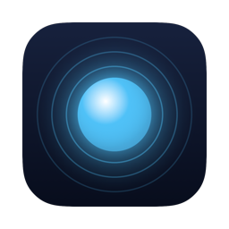
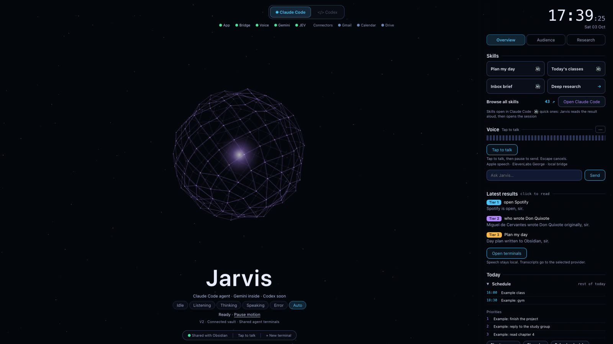

JarvisA butler that lives on my Mac.
I talk to it or click it. It plans my day, triages my inbox, runs thinking tools, and its hands open apps, search and type for me. It decides who should do each job: the Mac alone, Gemini, or Claude.
Private project · runs on my Mac · macOS app in Swift + a local Python bridge
One click plans it
Classes, deadlines and three priorities land in today's Obsidian note. The same colours show what Jarvis is doing: listening, thinking, speaking.
Classes, deadlines, events and 3 priorities, written into the daily note.
What got done, what moves to tomorrow, one line of reflection.
Scores the week from 1 to 10 using the daily notes and Jarvis receipts.
Upcoming exams and tasks, weather, classes and mail in one morning brief.

Triage, not noise
Each button is a skill: a written method Jarvis runs through Claude Code and files in Obsidian.
Sorts recent mail into urgent / reply / ignore and leaves drafts. It never sends.
What each class covered, from the per-session notes.
New internships that fit, Europe first, from a local database.
My CV against a posting, read as a recruiter and as an ATS: score and missing keywords.
Three AI headlines from the last 24 hours.
Planning, mail, research, writing, career, Obsidian, dev tools, system and design.
A room full of second opinions
Four voices (believer, sceptic, investor, judge) and a verdict: BUILD, FIX FIRST or KILL.
Interviews me one question at a time until the plan has no holes, then writes the spec.
Turns a rough task into a reusable prompt.
Five advisors debate a decision.
A web report with sources, saved to Obsidian.
One note becomes a LinkedIn post, a thread and a newsletter paragraph.
It uses my Mac for me
Say "open Spotify" and a pointer flies to the Dock and clicks. Jarvis reads any window through macOS Accessibility, so it is not limited to its own app.
"Open Spotify", "open YouTube", with the cursor flying to the Dock icon first.
Maps, YouTube, Spotify, Amazon: it types the query for me.
Drafts the text, then asks before pressing Enter. Irreversible actions always ask.
Play, pause, next, volume, scrolling, all by voice.
Tutor mode: it points at the button instead of pressing it.
When a plan works, it saves it and repeats it without calling a model next time.
Who handled the 61 orders on 1 October:
Code: manos.py (770 lines), ojos.py (527), cerebro.py (587). The Mac scenes in the video are real screen recordings of Jarvis at work.
Wherever I'm working
Hold ⌘M to talk (walkie-talkie), double-tap for hands-free. Whisper runs locally; Jarvis answers in a British butler voice.
Hover the notch to see what is next, the last answer and a music card.
Reads 269 of my chats with Claude, finds what I correct most and proposes CLAUDE.md changes. Nothing applies until I approve.
The HUD also runs as an Obsidian plugin; every order leaves a ticket in the vault.
Private project — runs on my Mac
Jarvis holds my calendar, mail access and account keys, so there is no public repository. If you want to see how it is built, ask.